lorenz_partial_100d_7lat_additive_mse__lc_sweepProject: Lorenz_INDpartial_N100_D1_NormTrue_T7__JacobianODE
Launched: 2026-04-15T03:49:00Z
Completed: 2026-04-15T06:50:11Z
Outcome: complete_clean
Git: latent-JacobianODE @ 838ba26
Expected runs: 9
lorenz_partial_100d_7lat_additive_mseDescription
Partial-obs Lorenz (x-coordinate only, observed_indices=[0]), n_delays=100, delay_spacing=1. Encoder input 100-D, z_dyn 7-D, z_null 93-D with kl_null_weight=0. Additive coupling encoder (zero_init, volume-preserving), joint training with LPL + reconstruction + loop closure. Plain MSE loss (not gennMSE). Reconstruction mode = most_recent. obs_noise_scale = 0. Sweeps loop_closure_weight only (9 runs).
Hypothesis
Both the 25d_gennmse and 25d_mse partial-obs sweeps underperformed the full-obs sweeps on Lyapunov recovery and MASE. Two plausible causes: (a) 25-delay window too short — by Takens, a 3-D attractor needs at least 2*3+1 = 7 delays for generic embedding, but true fidelity can require substantially more, especially since the observation is a single coordinate and the flow mixes timescales. (b) Null subspace absorbs history that z_dyn needs — the sufficient-statistic hypothesis. This sweep isolates (a): 100 delays (4x the previous) plus 7 latent dims (vs 3) for modelling headroom. If performance jumps noticeably, the 25d window was the bottleneck. If it still underperforms, the kl_null hypothesis (b) becomes the stronger candidate — motivating a follow-up sweep with a non-zero null penalty.
Success criteria
Swept axes (1): training.lightning.loop_closure_weight
Chosen run (by best_traj_loss): au3g4drn — traj_loss=0.00000, MASE=0.0253, R²=1.0000, LC loss=0.001, epoch=198.0
Swept-axis values at chosen run: training.lightning.loop_closure_weight=0.001
Runs analyzed: 9 (expected 9)
| run_idx | run_id | training.lightning.loop_closure_weight |
best_traj_loss | best_MASE | R² | LC loss | epoch |
|---|---|---|---|---|---|---|---|
| 4 | au3g4drn |
0.001 | 0.00000 | 0.0253 | 1.0000 | 0.001 | 198.0 |
| 0 | c298q1ql |
0 | 0.00000 | 0.0254 | 1.0000 | 7.286 | 187.0 |
| 1 | 7lisffbx |
1.0e-06 | 0.00000 | 0.0242 | 1.0000 | 0.629 | 187.0 |
| 2 | nf98ywkc |
1.0e-05 | 0.00000 | 0.0249 | 1.0000 | 0.116 | 198.0 |
| 3 | 5e7er73b |
1.0e-04 | 0.00000 | 0.0250 | 1.0000 | 0.011 | 187.0 |
| 5 | 3mf5lbdk |
0.01 | 0.00001 | 0.0402 | 1.0000 | 0.000 | 197.0 |
| 6 | q22g51rj |
0.1 | 0.00001 | 0.0584 | 1.0000 | 0.000 | 197.0 |
| 7 | xmuw8ps6 |
1 | 0.00002 | 0.0745 | 0.9999 | 0.000 | 198.0 |
| 8 | eyo7g55k |
10 | 0.00003 | 0.0896 | 0.9999 | 0.000 | 197.0 |
| Criterion | Verdict | Note |
|---|---|---|
| Best run's leading Lyapunov exponent > 0 (chaos recovered) | Unknown | |
| Best run's predicted Lyapunov spectrum within ~30% of empirical | Unknown | |
| Best-LC val/trajectory_r2 noticeably beats the 25d sweeps | Unknown | |
| Either this sweep beats 25d by a clear margin (n_delays bottleneck) or it doesn't (motivating a kl_null sweep) | Unknown |
Automated verdicts use simple numeric-threshold parsing and may mis-classify qualitative criteria. The Discussion section below takes precedence.
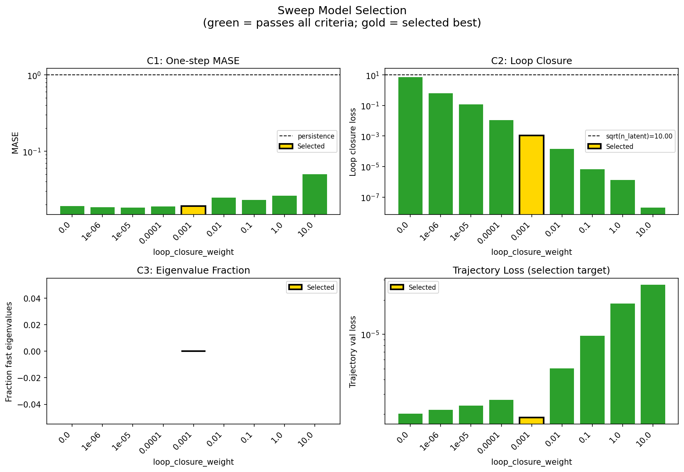
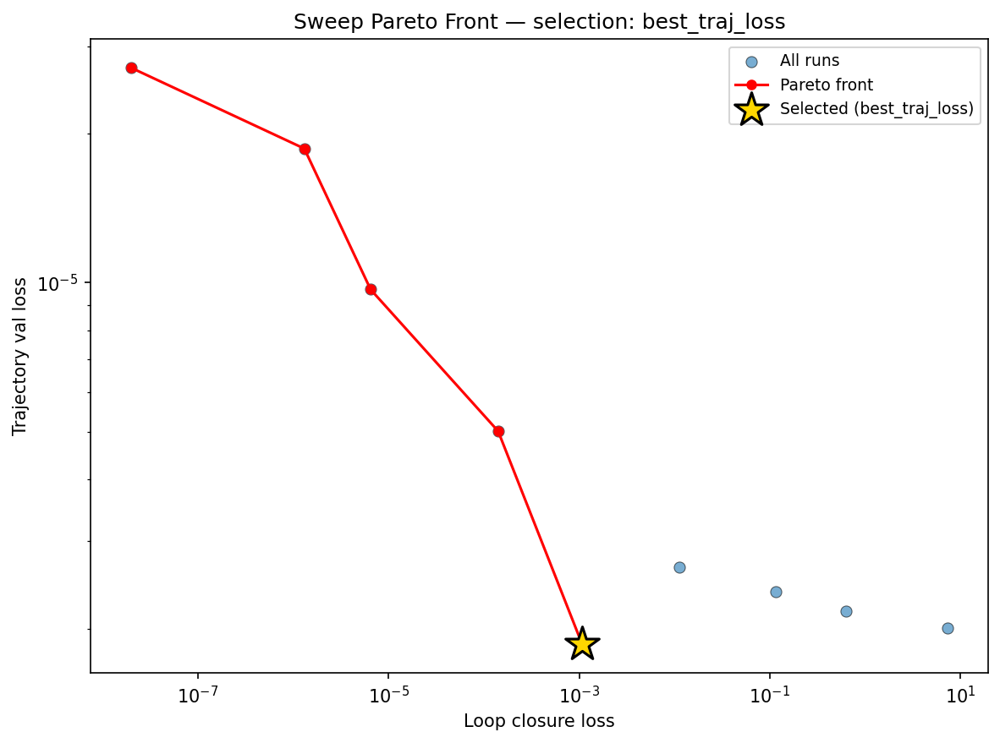
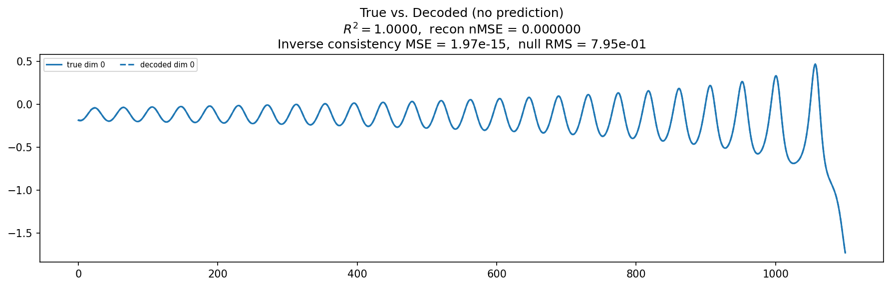
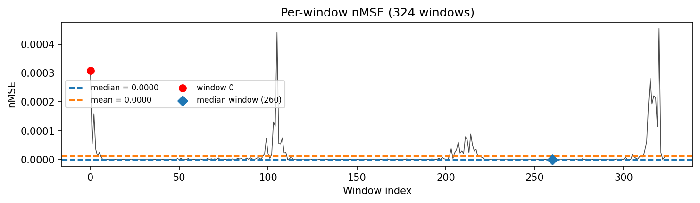
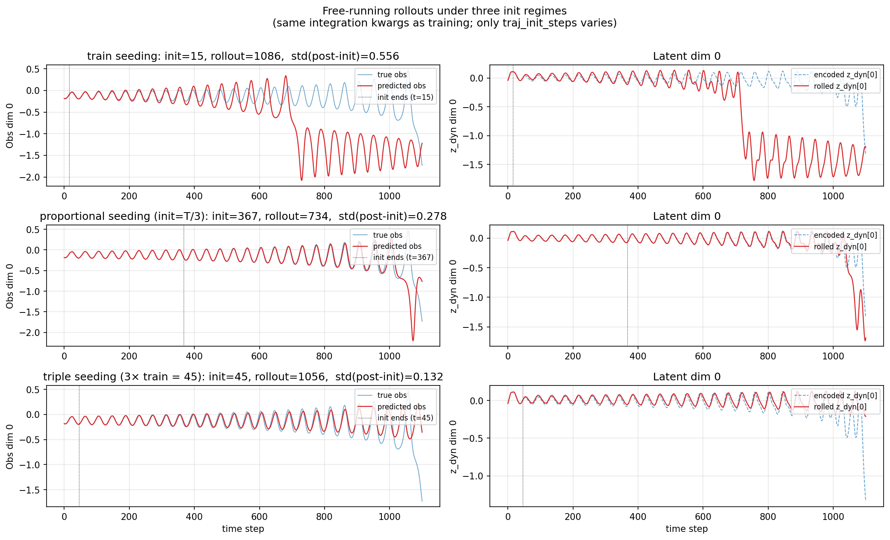
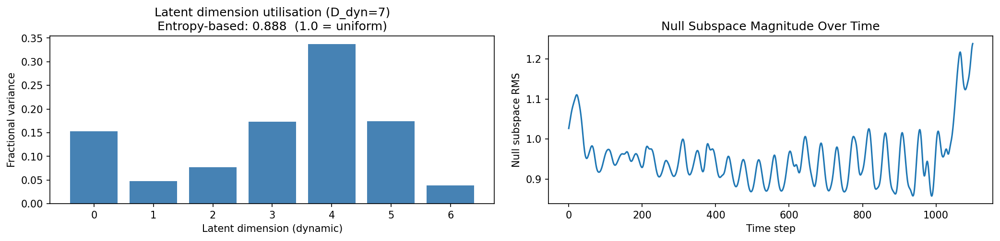
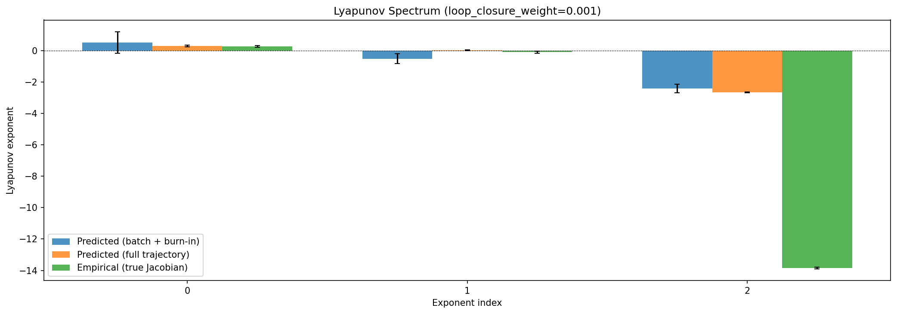
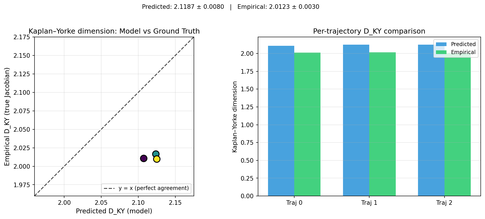
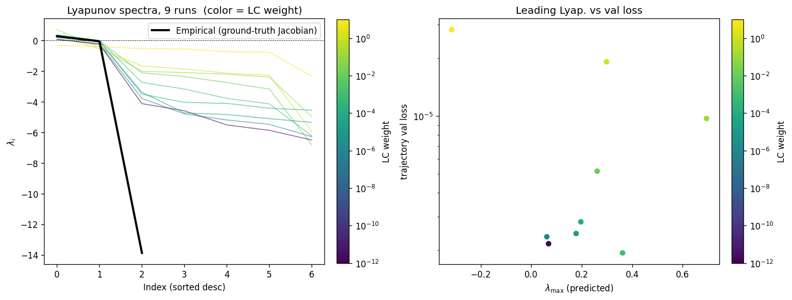
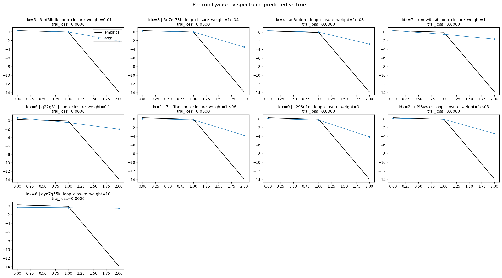
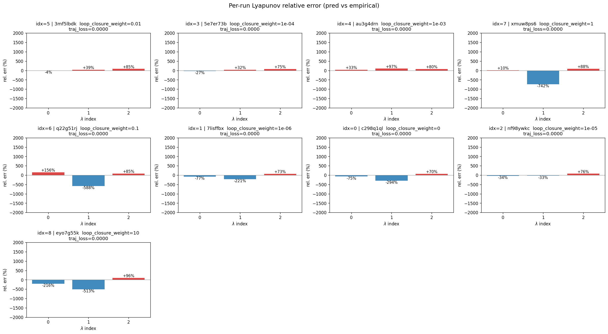
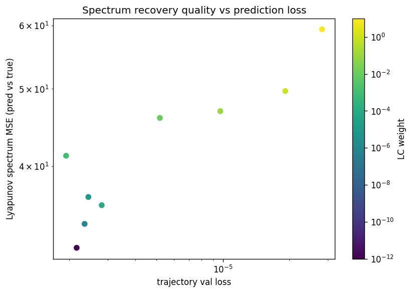
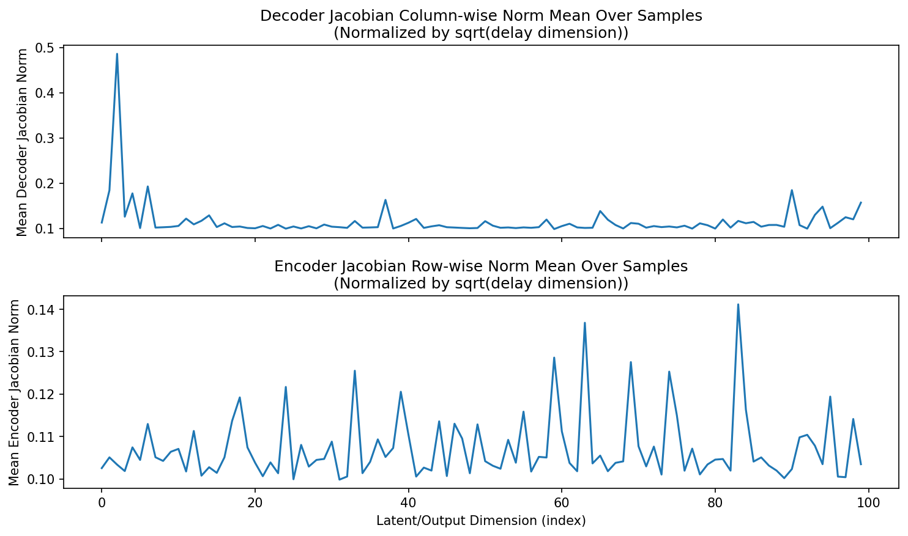
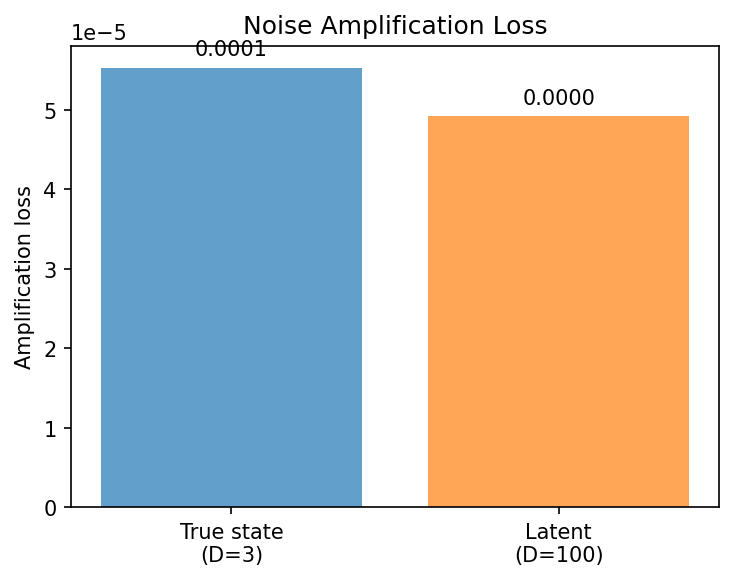
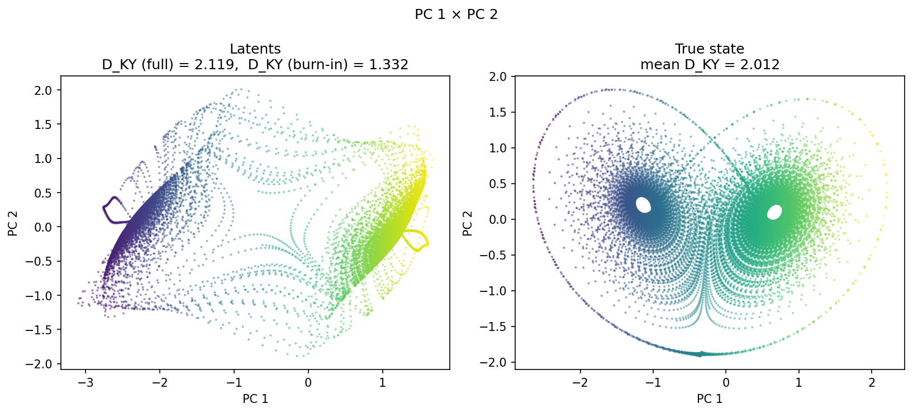
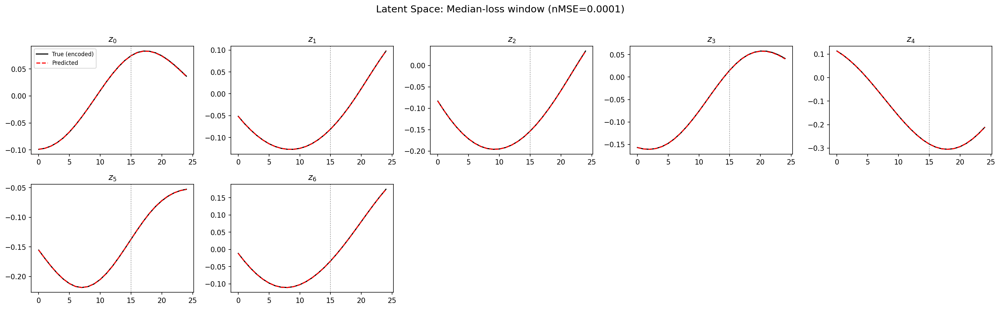
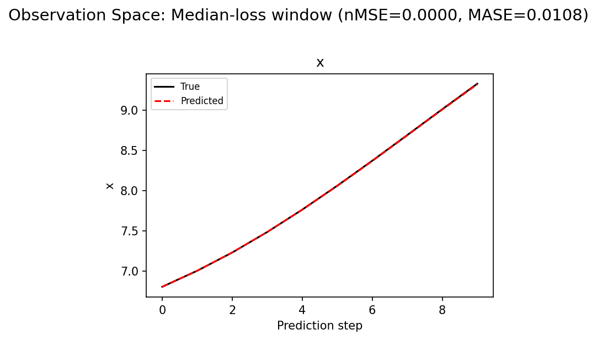
(to be written)
run_analytics stdoutrun_analyticsNo run_id provided — selecting best run from group 'lorenz_partial_100d_7lat_additive_mse__lc_sweep' ...
Found 9 total runs in JacobianODE/Lorenz_INDpartial_N100_D1_NormTrue_T7__JacobianODE (group=lorenz_partial_100d_7lat_additive_mse__lc_sweep)
All runs (state, loop_closure_weight, tangent_entropy_weight, kl_dyn_weight):
3mf5lbdk: state=finished, lc=0.01, te=0.0, kl_dyn=0.0
5e7er73b: state=finished, lc=0.0001, te=0.0, kl_dyn=0.0
au3g4drn: state=finished, lc=0.001, te=0.0, kl_dyn=0.0
xmuw8ps6: state=finished, lc=1.0, te=0.0, kl_dyn=0.0
q22g51rj: state=finished, lc=0.1, te=0.0, kl_dyn=0.0
7lisffbx: state=finished, lc=1e-06, te=0.0, kl_dyn=0.0
c298q1ql: state=finished, lc=0.0, te=0.0, kl_dyn=0.0
nf98ywkc: state=finished, lc=1e-05, te=0.0, kl_dyn=0.0
eyo7g55k: state=finished, lc=10.0, te=0.0, kl_dyn=0.0
slurm_timeout_min not found in any run config — falling back to 180 min
Including 3mf5lbdk (lc=0.01): use_all_runs=True (state=finished)
Including 5e7er73b (lc=0.0001): use_all_runs=True (state=finished)
Including au3g4drn (lc=0.001): use_all_runs=True (state=finished)
Including xmuw8ps6 (lc=1.0): use_all_runs=True (state=finished)
Including q22g51rj (lc=0.1): use_all_runs=True (state=finished)
Including 7lisffbx (lc=1e-06): use_all_runs=True (state=finished)
Including c298q1ql (lc=0.0): use_all_runs=True (state=finished)
Including nf98ywkc (lc=1e-05): use_all_runs=True (state=finished)
Including eyo7g55k (lc=10.0): use_all_runs=True (state=finished)
Found 9 effectively-done sweep runs:
loop_closure_weight=0.0, tangent_entropy_weight=0.0, kl_dyn_weight=0.0 -> run_id=c298q1ql
loop_closure_weight=1e-06, tangent_entropy_weight=0.0, kl_dyn_weight=0.0 -> run_id=7lisffbx
loop_closure_weight=1e-05, tangent_entropy_weight=0.0, kl_dyn_weight=0.0 -> run_id=nf98ywkc
loop_closure_weight=0.0001, tangent_entropy_weight=0.0, kl_dyn_weight=0.0 -> run_id=5e7er73b
loop_closure_weight=0.001, tangent_entropy_weight=0.0, kl_dyn_weight=0.0 -> run_id=au3g4drn
loop_closure_weight=0.01, tangent_entropy_weight=0.0, kl_dyn_weight=0.0 -> run_id=3mf5lbdk
loop_closure_weight=0.1, tangent_entropy_weight=0.0, kl_dyn_weight=0.0 -> run_id=q22g51rj
loop_closure_weight=1.0, tangent_entropy_weight=0.0, kl_dyn_weight=0.0 -> run_id=xmuw8ps6
loop_closure_weight=10.0, tangent_entropy_weight=0.0, kl_dyn_weight=0.0 -> run_id=eyo7g55k
n_dims=100, n_latent=100, n_dyn=7, dt=0.0150
run=c298q1ql: DiagnosticMetrics(one_step_mase=0.01902610808610916, loop_closure_loss=7.285726547241211, fast_eigenvalue_fraction=0.0, trajectory_val_loss=2.005813485084218e-06) (from cache, n_batches=100)
run=7lisffbx: DiagnosticMetrics(one_step_mase=0.01849205046892166, loop_closure_loss=0.6294549703598022, fast_eigenvalue_fraction=0.0, trajectory_val_loss=2.1704354367102496e-06) (from cache, n_batches=100)
run=nf98ywkc: DiagnosticMetrics(one_step_mase=0.018185092136263847, loop_closure_loss=0.11640094965696335, fast_eigenvalue_fraction=0.0, trajectory_val_loss=2.3759848772897385e-06) (from cache, n_batches=100)
run=5e7er73b: DiagnosticMetrics(one_step_mase=0.018947875127196312, loop_closure_loss=0.011254142969846725, fast_eigenvalue_fraction=0.0, trajectory_val_loss=2.662514816620387e-06) (from cache, n_batches=100)
run=au3g4drn: DiagnosticMetrics(one_step_mase=0.01906902901828289, loop_closure_loss=0.0010725540341809392, fast_eigenvalue_fraction=0.0, trajectory_val_loss=1.8616602801557747e-06) (from cache, n_batches=100)
run=3mf5lbdk: DiagnosticMetrics(one_step_mase=0.024641312658786774, loop_closure_loss=0.00014135209494270384, fast_eigenvalue_fraction=0.0, trajectory_val_loss=5.010381755710114e-06) (from cache, n_batches=100)
run=q22g51rj: DiagnosticMetrics(one_step_mase=0.022889820858836174, loop_closure_loss=6.498147740785498e-06, fast_eigenvalue_fraction=0.0, trajectory_val_loss=9.684760698291939e-06) (from cache, n_batches=100)
run=xmuw8ps6: DiagnosticMetrics(one_step_mase=0.026089906692504883, loop_closure_loss=1.309115646108694e-06, fast_eigenvalue_fraction=0.0, trajectory_val_loss=1.8657865439308807e-05) (from cache, n_batches=100)
run=eyo7g55k: DiagnosticMetrics(one_step_mase=0.04986768588423729, loop_closure_loss=2.005633170654164e-08, fast_eigenvalue_fraction=0.0, trajectory_val_loss=2.7161015168530867e-05) (from cache, n_batches=100)
Ranking method: best_traj_loss
Best run ID: au3g4drn
Best loop_closure_weight: 0.001
Best tangent_entropy_weight: 0.0
Best kl_dyn_weight: 0.0
Best traj loss: 0.000002
Criteria applied: ['C1', 'C2', 'C3']
Surviving: 9 / 9
Auto-selected run_id: au3g4drn
======================================================================
PARETO FRONTIER RUNS (5 runs)
======================================================================
Run ID LC Loss Traj Val Loss
------------ -------------- --------------
eyo7g55k 0.000000 0.000027
xmuw8ps6 0.000001 0.000019
q22g51rj 0.000006 0.000010
3mf5lbdk 0.000141 0.000005
au3g4drn 0.001073 0.000002 <-- selected
======================================================================
RANKING METHOD COMPARISON (over 9 survivors)
======================================================================
Method Run ID LC Loss Traj Val Loss
---------------------- ------------ -------------- --------------
best_traj_loss au3g4drn 0.001073 0.000002 <-- active
pareto_knee xmuw8ps6 0.000001 0.000019
geo_rank au3g4drn 0.001073 0.000002
minimax_rank au3g4drn 0.001073 0.000002
geo_log_score au3g4drn 0.001073 0.000002
minimax_log_score 3mf5lbdk 0.000141 0.000005
======================================================================
Loading run au3g4drn from JacobianODE/Lorenz_INDpartial_N100_D1_NormTrue_T7__JacobianODE ...
Train dataset shape: torch.Size([23672, 25, 100])
Validation dataset shape: torch.Size([7532, 25, 100])
Test dataset shape: torch.Size([3228, 25, 100])
Train trajectories dataset shape: torch.Size([22, 1101, 100])
Validation trajectories dataset shape: torch.Size([7, 1101, 100])
Test trajectories dataset shape: torch.Size([3, 1101, 100])
Loading checkpoint epoch=198-step=39800.ckpt...
Computing reconstruction ...
Computing MASE ...
Teacher-forced MASE: 0.0194
Free-running MASE: 0.0244
Computing latent utilization ...
Entropy-based utilization: 0.888
Null subspace mean RMS: 9.550717e-01
Computing Lyapunov exponents ...
Computing full-trajectory Lyapunov (3 test trajs, T=1101) ...
Predicted Lyapunov exponents (batch+burn-in, 128 windowed trajs):
λ_1 = +0.5159 ± 0.6785
λ_2 = -0.5155 ± 0.3068
λ_3 = -2.4080 ± 0.2719
λ_4 = -2.9829 ± 0.2272
λ_5 = -3.5357 ± 0.2471
λ_6 = -4.5047 ± 0.2960
λ_7 = -6.3818 ± 0.4127
Predicted Lyapunov exponents (full-length, 3 test trajs):
λ_1 = +0.3009 ± 0.0503
λ_2 = +0.0134 ± 0.0262
λ_3 = -2.6481 ± 0.0260
λ_4 = -3.1583 ± 0.0200
λ_5 = -4.0222 ± 0.0390
λ_6 = -4.4452 ± 0.0240
λ_7 = -6.3321 ± 0.0457
Empirical Lyapunov exponents (mean ± std):
λ_1 = +0.2716 ± 0.0605
λ_2 = -0.1016 ± 0.0797
λ_3 = -13.8370 ± 0.0514
Mean KY dim (predicted): 2.119 ± 0.008
Mean KY dim (empirical): 2.012 ± 0.003
Mean KY dim (burn-in): 1.332 ± 1.005
Computing prediction windows ...
Windows: 324 — nMSE min=0.0000, median=0.0000, mean=0.0000, max=0.0005
Computing long-trajectory free-running rollouts ...
Computing encoder/decoder Jacobians ...
encoder_jacobian: (128, 100, 100)
decoder_jacobian: (128, 100, 100)
Computing amplification loss ...
Amplification loss — True state: 0.000055
Amplification loss — Latent: 0.000049